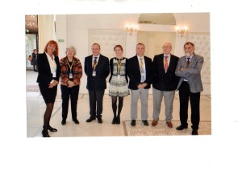
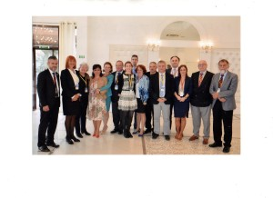
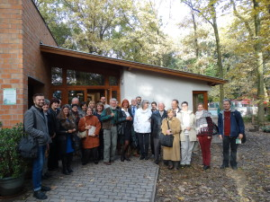
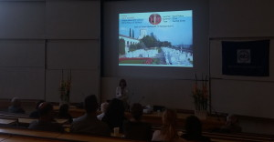
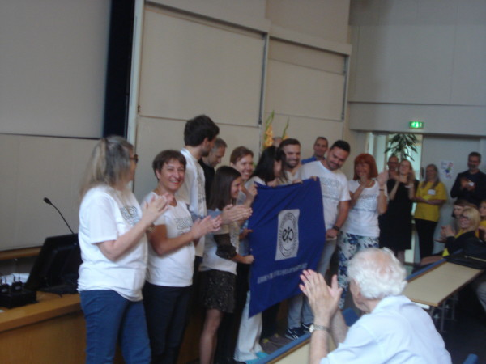

Proglašen je najbolji naučni rad članova DPS za 2015/16. godinu – Odluka - nagrada-2016
Parazitološko udruženje Južne Afrike (PARSA) organizuje III Međunarodni kongres o parazitima divljih životinja u Skukuzi, Nacionalni park Kruger, od 24-27/09/2017. god
DPS objavljuje poziv za prijavu radova za godišnju nagradu DPS.
Radovi treba da su publikovani tokom 2015/2016., a rok za prijavu je 25.11.2016., na iklun@imi.bg.ac.rs.
Spisak prijavljenih radova možete pogledati ovde.
Dodela nagrade planirana je za redovni decembarski sastanak Društva.
http://www.worldleish2017.org/#/
Program:
http://worldleish2017.org/#/schedule
Član DPS dr Olgica Đurković-Đaković bila je pozvani predavač na “Humans and animals: Common diseases”, II evropsko-regionalnoj konferenciji o parazitskim zoonozama (Temišvar, Rumunija, 5-9/10/2016).
 Održan drugi bilateralni sastanak Društva parazitologa Mađarske i DPS, 14. oktobar 2016., Segedin
prevod-programa-segedinske-televizije
Prezentacije:
Član DPS dr Ljiljana Sofronić Milosavljević bila je pozvani predavač na “Trichinellosis in Science and Practice“, pratećem simpozijumu XXIV Kongresa Društva parazitologa Poljske (Bochnia, 7-8/09/2016).
conference-programme-poland-final
bochnia-wieliczka-mine-maria-frits-bretislav-antti-fabrizio -ljilja-antti-1
Delegates-meeting-minutes-efp -2016
DPS organizuje EMOP 2020 u Beogradu !
Na Skupštini Evropske federacije parazitologa održanoj 22.07.2016. u toku EMOP XII (Turku, Finska), Društvo parazitologa Srbije je uz jednoglasnu podršku svih nacionalnih društava dobilo organizaciju EMOP XIII, koji će se održati 25-30.08.2020. godine u Beogradu.
Deo atmosfere sa proglašenja novog organizatora – DPS preuzima zastavu EFP od Skandinavskog društva parazitologa
Na Skupštini je izabran i novi Board EFP za mandatni period 2016-2020. Novi predsednik EFP je Tomas Romig (Štutgart, Nemačka) a predsednik DPS Olgica Đurković-Đaković izabrana je za generalnog sekretara.
Poziv na 51. Dane preventivne medicine – Niš 26-29.09.2016.
XV stručni sastanak DPS održaće se u Novom Sadu, u sredu 12.04.2017. u 12 h.